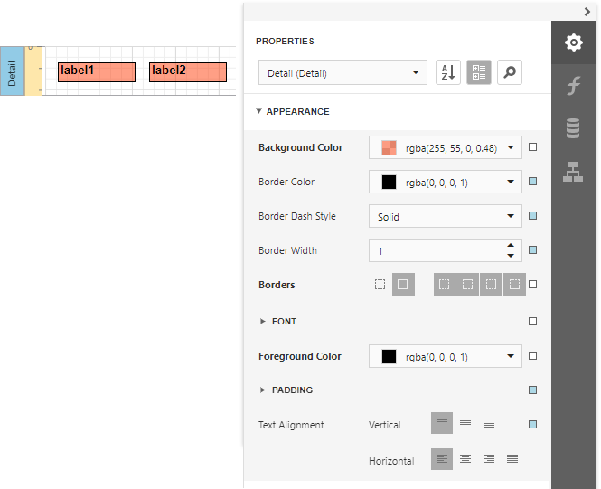

Appearance Properties
This document describes the purpose and implementation of the appearance properties - a special set of properties that allow you to customize the appearance of a report or any of its elements.
Properties Overview
Every report element (control or band), and a report itself, has a set of properties that specify its appearance. They are listed in the following table.
| Property name | Description |
|---|---|
| BackgroundColor | Gets or sets a background color to a report element and its child controls. |
| BorderColor | Gets or sets a border color to a report element and its child controls. |
| BorderDashStyle | Gets or sets a border dash style to a report element and its child controls. |
| Borders | Gets or sets borders (top, right, bottom,left), which should be visible for a report element and its child controls. |
| BorderWidth | Gets or sets a border width to a report element and its child controls. |
| Font | Gets or sets the font options (its name, size, etc.) to a report element and its child controls. |
| ForegroundColor | Gets or sets the foreground color to a report element and its child controls. |
| Padding | Gets or sets the indent values which are used to render the contents of a report element and its child controls. |
| TextAlignment | Gets or sets the text alignment to a report element and its child controls. |
Access Appearance Properties
Use the Report Designer's Properties panel to access the appearance properties.

Property Value Inheritance
By default, appearance properties for every control or a band are set to empty values, which means that their real values are obtained from a control's parent, or a parent of its parent and so on.

Note
The appearance properties may not be used by all descendants of the current report element for which they are defined. For example, the PageBreak element ignores the BackColor property.
To reset values of these properties, click the button to the right of the editor, and in the invoked popup menu, select Reset. Then, the control's actual appearance will be determined by the appropriate properties settings of its parent.

If a report element has a style assigned to it, the priority of the properties defined by this style is determined by the StylePriority property. Note that when a conditional formatting is involved, the appearance it defines is of greater priority than the properties described above.